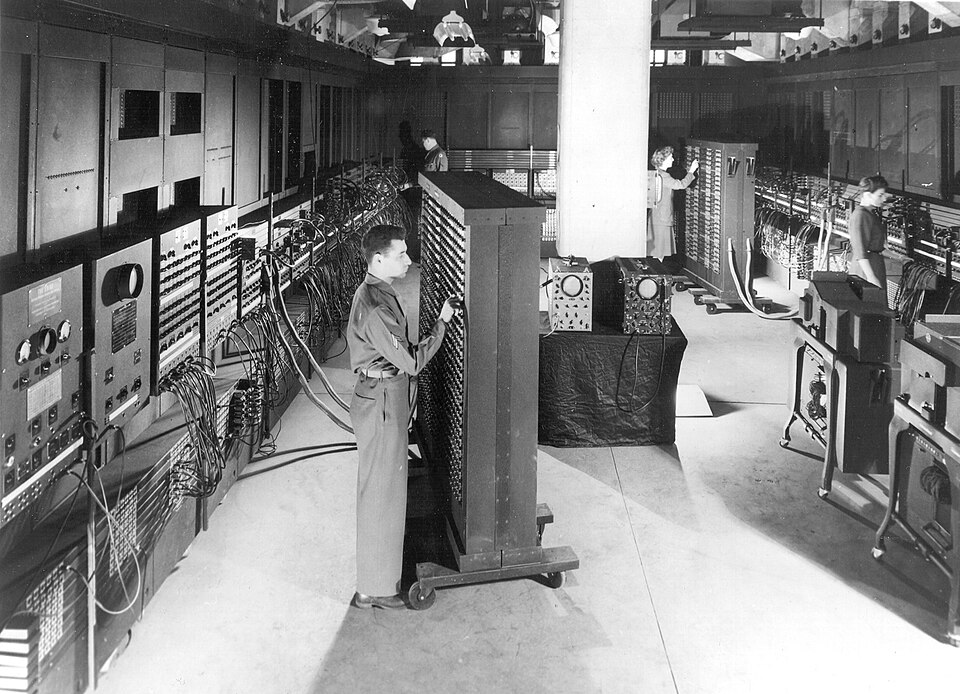

A evolução da tecnologia.
Uma viagem interativa através das máquinas, ideias e invenções que transformaram a maneira como a humanidade vive, trabalha e se conecta.
Seis momentos.
Uma revolução.
Selecione uma época para alterar a exposição.
ENIAC
Considerado um dos primeiros computadores eletrônicos de uso geral, o ENIAC ocupava uma sala inteira e utilizava milhares de válvulas eletrônicas.

Seu progresso
Tecnologia não é apenas hardware.
O Digital Museum é uma experiência experimental criada para apresentar a evolução da tecnologia de maneira visual e interativa.
Da escala monumental dos primeiros computadores até sistemas capazes de processar problemas quânticos, cada período representa uma mudança na relação entre pessoas e tecnologia.
DIGITAL MUSEUM / 2026